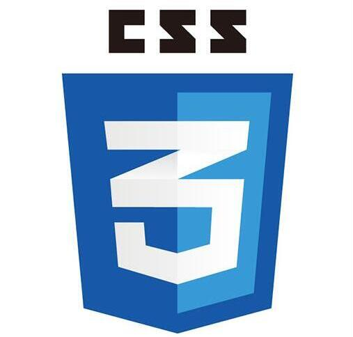
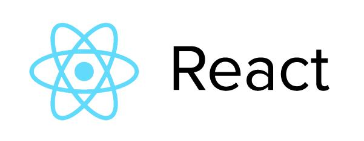
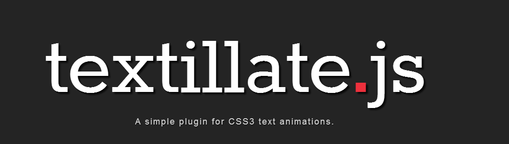

关于我们
本系统将提供一套您专属的、轻量化、简洁、易用的待办事项管理系统，从而最大程度地提高您的工作效率。您不仅可以记录当前事项，还可以轻而易举地查询历史事项，并生成统计图表。
本系统使用以下语言编写
 |
 |  |
| 超文本标记语言 | 级联样式表 | 最流行的全栈化语言 |
| 强大而优雅的解释型面向对象语言 |
本系统的完成得益于以下开源项目的支持
 |
 |
 |
| 基于Python的微内核后端框架 | 强大简洁的JavaScript库 | 最流行的非关系型数据库 |
|  | ||
| 来自facebook的下一代前端框架 | 最受欢迎的前端样式框架 | 纯JavaScript编写的图表库 |
|  | ||
| CSS3和JavaScript实现的文本动画插件 |